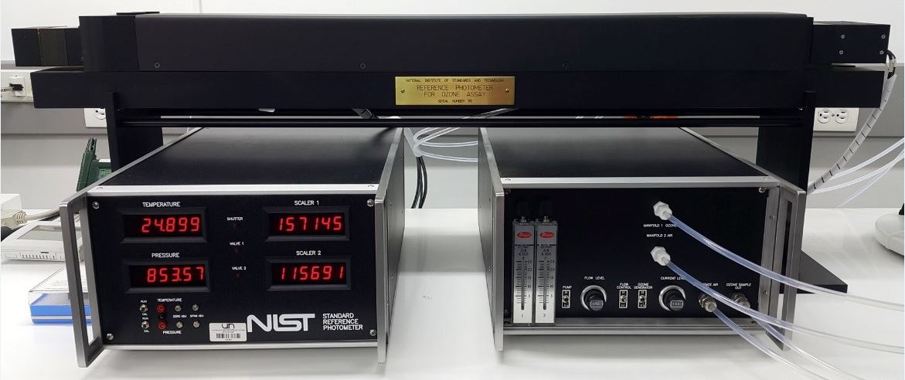
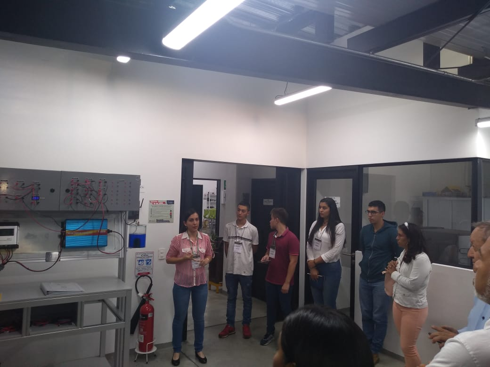
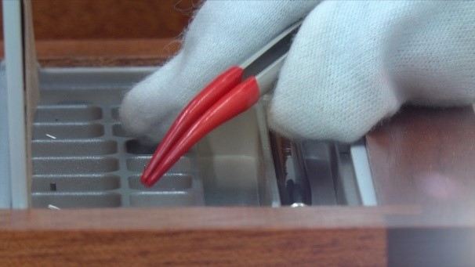

Conocimiento que se
pone en práctica.

ServiciosServicios y capacidades
Encuentra análisis, ensayos y capacidades para tu necesidad.
Explorar →
Comunidad UNALDocencia e investigación
Conecta tu práctica o proyecto con los laboratorios de la Sede.
Explorar → Técnicos y directores
Técnicos y directoresGestión del laboratorio
Accede a orientación, herramientas y apoyo de la Dirección.
Explorar →Ciencia, formación y servicios
Dirección de Laboratorios
Conectamos tu necesidad con las capacidades de la Universidad.
01 / Servicios y soluciones
¿En qué podemos ayudarte?
Explora por área de interés y encuentra el laboratorio al que puedes dirigirte.
Explora capacidadesConstrucción e infraestructura
Suelos, pavimentos y comportamiento de materiales.
Explorar → Explora capacidades
Explora capacidadesAmbiente y sostenibilidad
Capacidades para estudiar el entorno.
Explorar →
Explora capacidadesAgroindustria y alimentos
Consulta capacidades para suelos y alimentos.
Explorar →Energía y minería
Equipos, materiales y procesos del sector.
Explorar →Explora capacidadesManufactura y materiales
Caracterización, fabricación y metrología.
Explorar → Explora capacidades
Explora capacidadesOtras capacidades
Artes, humanidades y trabajo interdisciplinario.
Explorar →Fotografías de contexto del sitio institucional. Consulta en cada ficha el alcance y las condiciones del servicio.
02 / Comunidad universitaria
Un laboratorio.
Muchas formas de aprender.
Encuentra la ruta que necesitas para tu práctica, tu investigación o tu trabajo diario.
03 / Proyectos e impacto
El conocimiento también transforma nuestros espacios

Cuidar los equipos es fortalecer las capacidades
Conoce el piloto de taller de mantenimiento interno de equipos y su aporte al cuidado de la infraestructura de la Sede.
Conocer el proyectoConoce la Dirección →Tu siguiente paso
De tu necesidad a una solución
- 01
Encuentra
Busca el servicio o la capacidad que necesitas.
- 02
Conoce
Revisa el laboratorio y confirma las condiciones.
- 03
Solicita
Continúa al canal institucional correspondiente.